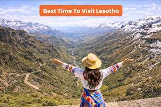
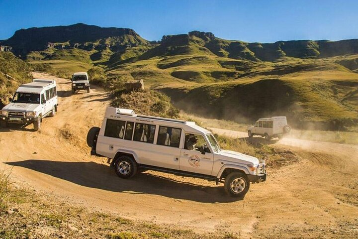
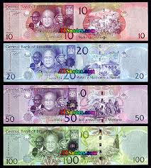

Travel Tips for Lesotho

Best Time to Visit
The best time to visit Lesotho is generally between September and April, when the weather is most pleasant for travel and outdoor activities. During spring (September to November), the country is warm, fresh, and green, with blooming flowers that make the mountain scenery especially beautiful, making it ideal for hiking, pony trekking, and photography. Summer (December to March) is also a good time to visit because the landscape is lush and waterfalls are at their fullest, although you may experience short afternoon thunderstorms. If you are interested in snow and winter activities, the best time is from June to August, when the highlands become cold and sometimes snow-covered, creating opportunities for skiing, especially at Afriski Resort, although travel in remote areas can be more challenging during this period.

Transport
The main types of transport in Lesotho include road transport, taxis, buses, 4x4 vehicles, and pony trekking. Minibus taxis are the most common and are used for travelling between towns and villages. Public buses are available but are usually slower and less frequent. In mountainous and rural areas, 4x4 vehicles are preferred because of rough and unpaved roads. Pony trekking is also a unique traditional form of transport used in hard-to-reach highland areas.

Currency
The official currency of Lesotho is the Lesotho Loti (LSL). It is issued by the Central Bank of Lesotho and is used for all local transactions within the country but ZAR(Rands) are widely accepted.

Top Activities
Enjoy hiking, pony trekking, waterfall visits, and experiencing traditional Basotho culture.